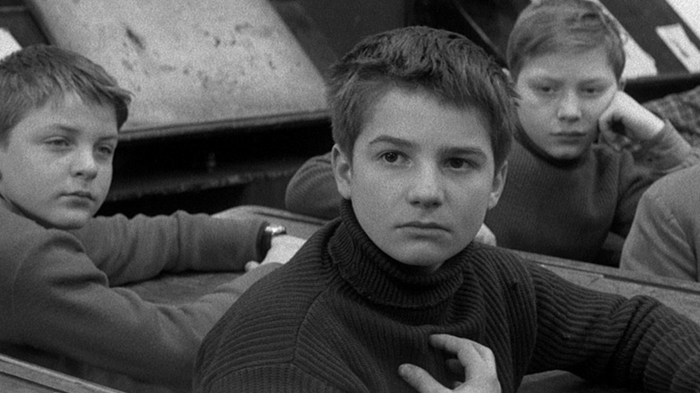

How to Appreciate Film
Perhaps you are one of the many people whose film consumption consists of only the most recent Marvel movies or the Star Wars trilogies. Maybe you've watched
Mean Girls a couple of times with your friends. Perhaps you've even watched
Forrest Gump!
But then your friend recommends a "classic" to you, but you see that the release date is before 1980. You think to yourself -
how could people like these old movies? I once tried watching one, and it was so boring! The actors are so plastic! But you hear your friend, and everybody else in the whole world, fawning over these old movies, and you wonder if perhaps it's something wrong with you.
The transition from modern Hollywood blockbusters to 20th century cinema is difficult to go through, and many of the films you watch will make you wonder whether all these cinephiles are just yearning for a bygone era. I've been there!
But learning to appreciate the classics can be an influential step in one's life. After all, film is, in my opinion, the most powerful and accessible part of Western culture. Only a small fraction of people still read books, and even less actually care about visual art. For many people, culture is what breathes meaning into human life - film captures and adds to it.
Here are my five recommendations for movies to watch to help you become transition into a true movie lover!
The Shawshank Redemption (1994)
This is one of my all-time favorites. There's nothing unusual about this film: it does not do anything you wouldn't expect out of a normal film. It's special because it does what it sets out to do so perfectly and so powerfully. This movie is a good watch as an introduction to good cinema because the standard dramatic arc is satisfying enough for somebody who comes from blockbuster movies, but the additional feelings evoked force the viewer to examine aspects of the human condition more transcendent than the standard "good triumphs over evil."
Dunkirk (2017)
This movie is a basic good-fighting-against-evil war movie. There is no deep, complex character development, and nothing is particularly unpredictable. I chose this movie because it is nothing short of a cinematic masterclass from the director, Christopher Nolan, who used almost no CGI in this film. Watching this will help you understand the interplay between camera, light, and music and how they combine to enhance the pathos in a movie that has little dialogue.
American Graffiti (1973)
This simple coming-of-age film will show you that a film can be satisfying, casual, funny, and "great" at the same time. This film is considered one of the all-time greats, yet there is absolutely nothing complex or dramatic about it. A film is "great" when it accurately and powerfully tells a story about the human condition that everybody resonates with at some intrinsic level.
North by Northwest (1959)
This movie is another crowd-pleaser that is intensely suspenseful yet not at all complex. I chose it because it's a good introduction to how dialogue in classic cinema differs from dialogue today. For a modern viewer, the dialogue seems formal, old-fashioned, and unrealistic. (Which is all true.) Modern movies typically have dialogue that is as realistic as possible. It's important to realize that in older movies (mostly before the 60's), the suavity and elegance of the dialogue is incredibly important and that the choice wordings are as worth appreciating as anything else.
Casablanca (1942)
Same as above, but far more famous. This movie does a good job of developing meaningful, highly dimensional characters, an integral part of a good film. There is no good guy, bad guy dynamic in this movie. The characters are human. Roger Ebert writes: "These are not heroes ... these are realists, pragmatists, survivors."